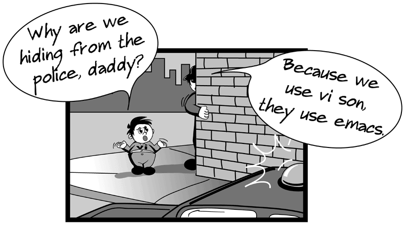

Vim

Among all the editors I had used, Vim is the best. Below are few commands to get familiarize with Vim Editor
Table of Contents
- How to open file
- How to navigate in file
- How to search word in file
- How to save and quit file
- How to cut,copy,paste
- How to insert text in file
- How to undo
- How to move out of vi to shell to run unix command
- How to replace text
- Set options
- Alternative way to go escape mode
- How to split screen
- To know the status of the program
- To mark some position in program and coming to back to that program
- Setting keys for specific options
- To clean up control m's in the file
- Lower case to upper case
- Indenting a file
- Global command
- More useful commands
- Functions
- Modes
- Difference
- Mapping
- Encryption
- Registers
- Buffers
- Recording
- Abbreviation
- Spell checking
- Indenting xml
- Incrementing and decrementing
- In insert mode, auto completion
- Sorting
- Tracing
- Using back reference while substitue
- Editing at column
- Plugin Manager
- Interesting Plugins
How to open file
e filename/vi filename to open file in vi
view filename to only view the file. restricted to write
:enew to edit new file
:new to edit new file in H split
:vnew to edit new file in V split
:tabe to edit new file in new tab
:e! return to unmodified file
How to navigate in file
gg to go to start of the program
G to go to the end of the program
`` to go to the previous position
~ to reverse the case of the letter under Cursor
0 to go to the start OF the line
$ to go to the end OF the line
Ctrl-u TO up the half the page
Ctrl-d TO down the half the page
Ctrl-f TO forward the page
Ctrl-b TO backward the page
H moves cursor to HOME of the page
M moves cursor to MIDDLE of the page
L moves cursor to BOTTOM of the page
:tabe or :tabnew to open new tab
:tabp - move to previous tab
:tabn - move to next tab
gt to move to next tab
gT to move to previous tab
3gt to move to 3rd tab
How to search word in file
/word to find the word
/\<word\> to find exact word, not worda or worddd
* to find the exact word under the cursor forward
# to find the exact word under the cursor backward
gd to find the exact word under the cursor forward
gD to find the exact word under the cursor backward
g* or g# to find cursor word without \< and \>
J to join current line with line below with space
gJ to join current line with line below without space
?word to find the word
* to find the next
n to find next in (forward)
N to find next in (downward)
:g/ gives the lines with search word
:%s//new/g will replace the last search word with new globally
% in escapemode to find the other pair of the parenthesis
:linenumber to go to that line number
nG to go that line n
ngg to go that line n
:lvim /pattern/gj *.txt will search all txt files with pattern
:lvim /raj\_.\{-}shekar/gj **/* to search for raj and after shekar
:lvim /raj\_.*shekar/gj **/* to search for raj and after shekar
:lvim /\(raj\_.*shekar\)\|\(shekar\_.*raj\)/gj **/* to search for raj and shekar in any order
:lw used after lvim to know the search results
:lgrep -i "raj" *.txt search all txt files with raj
[I to search all the lines containing word under cursor
:lv /pattern/gj **/*.txt to search recursively
/^pattern search all lines starting with pattern
/pattern$ search all lines ending with pattern
/^pattern.*raj.*shekar - to search line containing pattern as first word AND raj as next AND shekar in same line.
/pattern\_.*raj - to search for pattern AND raj with multiple lines between
/.*pattern\&.*raj - search for pattern and raj in any sequence in same line
/pattern\|raj - search for pattern or raj.
/\<\d\d\d\d\> - to search for 4 digit numbers
/.*word.* - to highlight all lines containing search word
:%s/word//gn - to count the number of occurences of word in file
:%s///gn - to count number of of occureneces of previous word
:promptf to find word in windows style
:promptr to replace word in windows style
How to save and quit file
:q to quit
:q! to quit without save
:wq to save and quit
:w to write and be there in program
:x to write and exit
:x! not to write and exit
ZZ to save and exit in command mode (capital Z)
:w filename to write the content on file
:w! filename2 to overwrite the existing filename to filename2
How to cut,copy,paste
dd to delete
dw to delete the word under cursor
D to cut the line upto end of the line
yy or Y to copy the line (yank the line)
yw to yank current word under cursor
:1,10d -- to cut the lines in between 1 to 10 inclusive
:1,10y -- to yank/copy the text between 1 to 10 inclusive
:'a,'bd -- to cut the lines in between a to b marked tags inclusive
:'a,'by -- to yank/copy the lines in between a to b marked tags inclusive
:1,10 co 15 to copy all the lines from 1 to 10 (inclusive) after 15th line
:1,10 m 15 to move all the lines from 1 to 10 (inclusive) after 15th line
p to paste
shift+p to paste
ddp to reverse 2 lines
:t n -- copy current line after line n
:xt n -- copy line x after line n
:m n -- move the current line after line n
:xm n -- move the line x to line after line n
:r filename to paste that file at cursor position
cc to change the entire line
cw to change the word under cursor
dG to delete from cursor line to end of file
dgg to delete from start of file to cursor line
ggdG to delete all contents in file
ggyG to yank all contents in file
d1G to delete from start of file to cursor line
nGdd to delete the line n
"bdd to yank or cut the line in one register b (it can be any letter from a to z)
"bp to paste the content in register b
How to insert text in file
a to insert mode
i to insert mode
A to insert at end of line
I to insert at first of line
o to insert in newline (next to cursor line)
O to insert in above line of cursor
:set ro readonly mode
:set ro! to remove readonly mode
How to undo
u to Undo
Ctrl+r to redo
How to move out of vi to shell to run unix command
:shell goto shell
:sh goto shell
exit or Ctrl+d to return back to vi editor
:! command to execute that command while in VI
RETURN to come back to vi editor
How to replace text
:%s/old/new/g to replace old word/letter with new word without confirmation
:%s/old/new/gc to replace old with new with confirmation
:%s/\<raj\>/she/g to replace only "raj" with "she",,not rajashekar or raja
:1,$ s/old/new/g to replace all old with new in whole file
explanation
1 -- start of file
$ -- end of file
s -- substitute
old -- old text
new -- new text
g -- globally
:n,m s/old/new/g to replace all old to new from line n to m
:%s/\s\+$//g to remove all white spaces at end of each line
:%s/^\s\+//g to remove all white spaces at start of each line
:%s/\r//g to remove all ^M in file
:bufdo %s/pattern/substitue/ge | update replace all pattern in files to substitute
:%s/suck\|buck/loopy/gc replace suck or buck with loopy
:%s/fred/<C-R>a/g to replace fred with contents of register "a"
Set options
set options
:set ai for auto indent
:set si for smart indent
:set noai for no auto indent
:set nu for number display on left side of line
:set nonu for remove the displaying numbers
:set vb t_vb= to remove the beep sound
:set hls for highliting search word
:set nohls for not highlighting the search word
:syntax on -- to on syntax of programming
:set incsearch to set increment search
:set ic to ignore case while search
:set backspace=2 to use backspace in insert mode
:set wrap to wrap up the lines
:set nowrap to not to wrap up the lines
:set noerrorbells to remove the beep sound
:set errorbells to set the beep sound
:set novisualbell to remove flash
:set visualbell to set flash
Alternative way to go escape mode
ctrl+[ is also called as escape mode
How to split screen
:split anotherfile // horizontally spliting
:sp filename // horizontally spliting
:vsplit anotherfile // vertically spliting
:vsp filename // vertically spliting
or at shell prompt
vi -o file1.txt file2.txt // horizontally
vi -O file1.txt file2.txt // vertically
at escape mode
ctrl-w-v to open a new window vertically
ctrl-w-n to open a new window horizontally
ctrl-w + increase the size of window
ctrl-w - decrease the size of window
ctrl-w = to equalize the size of each split window
ctrl-w | to maximize in vertical split
ctrl-w _ to maximize in Horizontal split
ctrl-w h to move to the window left
ctrl-w j to move to the window below
ctrl-w k to move to the window above
ctrl-w l to move to the window right
ctrl-w H to move current window to far right
ctrl-w J to move current window to far Down
ctrl-w K to move current window to far Up
ctrl-w L to move current window to far left
ctrl-w T to move current window to new tab
ctrl-w n to open new file in H split
ctrl-w q to close
ctrl-w o to close all splits except current window (:only also do the same)
To know the status of the program
ctrl-G
:f
To mark some position in program and coming to back to that program
mp where the position is marked as p (it can be anything from a-z)
to return back to that position p we type 'p
"ay'b to yank from current cursor line to the mark position b into register a
"ad'b to cut from current cursor line to the mark position b into register a
"ap to paste the content in that buffer
Setting keys for specific options
nnormap <key> :set option<cr>
To clean up control m's in the file
:%s/<control v><control m>/ /g
Lower case to upper case
~ to switch case of charater under the cursor
g~~ to switch case of whole line
gUU - To make the whole line upper case
guu - To make the whole line lower case
U - In visual mode make selected to upper case
u - In visual mode make selected to lower case
Indenting a file
== makes the current line indent
In visual mode select the whole part and then == to indent the selected part
good settings
:set sw=4
:set smarttab
:set et
Global command
:g/pattern - list all the lines having pattern
Ctrl+x Ctrl+l gives list of lines to insert
:g/pattern/d - delete all the lines having pattern
:g!/pattern/d - delete all the lines that are not having pattern
:v/pattern/d - delete all the lines that are not having pattern
:g/pattern/ copy $ - copy all the lines that are having pattern to end of file
:g/pattern/ co $ or :g/pattern/t $ also do the same as above
:g/^$/d - delete all empty lines
:g/^\s*$/d - delete all empty lines precisely
:v/\S/d - delete all empty lines
:v/./d - delete all empty lines
:g/.*/m0 - This will reverse the order of the lines in the current file.
:g/^/m0 - to reverse the file
:g/^$/,/./-j to replace mulitple empty lines with single line
:v/./,/./-j to replace mulitple empty lines with single line
:g/pattern/ .w! >> newfile.txt - writes all line having word pattern
:.w! >> newfile.txt - writes current line into newfile
:g/pattern/ copy $ - to paste all the lines containing pattern to end of file
:g/pattern/ t $ - same as above
:g/pattern/ t 5 - to paste all the lines containing pattern after line 5
:g/start/,/end copy $ - copy from start to end to end of file
:g/start/,/end/d - to delete start to end block
:g/start/,/end/j - to join start to end.
:g/start/y A - to copy all the lines to register A
:g/^pattern/s/$/end - Add end for lines starting with pattern
:g/^/pu _ to double space the whole file
:redir @r - redirect to register r
:g/pattern - search globally
:redir end
"rp paste the contents in register r
More useful commands
:Ex opens explorer in seperate buffer
:Sex open explorer in split
:Vex open explorer in vertical split
:Tex open explorer in new tab
:browse e open explorer in windows style to open
:bro op open explorer in windows style to open
:bro sav open explorer in windows style to save
Ctrl+n (in insert mode) gives list of matching words to insert
Ctrl+p (in insert mode) gives list of matching words to insert
Ctrl+x Ctrl+l gives list of lines to insert
ggVGg? to rot13 the whole file
ggg?G to rot13 the whole file
Functions
use TABS to complete words
function! Tab_Or_Complete()
if col('.')>1 && strpart( getline('.'), col('.')-2, 3 ) =~ '^\w'
return "\<C-N>"
else
return "\<Tab>"
endif
endfunction
:inoremap <Tab> <C-R>=Tab_Or_Complete()<CR>
:set dictionary="/usr/dict/words"
Modes
Esc - escape mode
i/I - Insert mode
a - insert after cursor position
A - insert at end of line.
v - visual mode
V - visual mode to select whole line
gv - select last visual select
o - navigate in visual select
V% - to select match
V}J - join the selection
zf - in visual mode, fold selection
za - to open and close fold
zo - to open the fold
zc - to close the fold
zR - to open all folds
zM - to close all folds
Ctrl Q - to enter visual block
I - to add infront of the selection
A - to add after the selection
c - to change the value in selection
Difference
:vsp filename2 - (in filename1)
:windo diffthis - (find diff between filename1 and filename2)
do - to obtain the difference for the current line from diff file
dp - to put the difference for the current line to diff file
Mapping
map <F11> : set hls! <Bar> set hls? <CR>
<CR> : Carriage Return
<ESC> : Escape
<LEADER> : \
<BAR> : |
<BACKSPACE> : backspace
<SILENT> : no hanging shell window
Encryption
:X to set password for file (powerful)
:set key= to remove password for file
Registers
:reg to show the registers
"ay yank current line to register a [26 registers]
"ap paste buffer a
[A-Z] registers are to append
[a-z] registers are to override
qaq to clear the register a - record nothing
Ctrl-r register - to paste the contents of the register in insert mode
Buffers
:ls to list all the buffers
:bp to move to previous buffer
:bn to move to next buffer
:bd to remove from buffer
:args **/* to keep all files in the current directory in vim (SUPER)
:rew to first file in args
:te Buffers to show the menu buffer
:badd add file to buffer
:b# to alternate buffer
Ctrl-^ is to switch alternate buffers
:tab ball to open all buffers in tabs
:ball to open all buffers Horizontally
:vert ball to open all buffers vertically
:xa save all buffers and exit
:wa write all buffers
Recording
qq is to start recording commands - use (a-z) to record
@q to execute command in recording
n@q to execute command n times
qqq to remove recorded command
Abbreviation
:abbr USA United States of America - to set the abbreviation
type USA (in insert mode) space will give you USA.
:unabbr USA to unset the abbreaviation
Spell checking
:set spell - to on spell checking
:set nospell - to off spell checking
z= to get the spell corrections
[s to previous misspell
]s to next misspell
Indenting xml
nJ - join n lines with one space in between
ggVGJ - to join all the lines with one space in between
ggVg :j - to join all the lines with one space in between
ggVg :j! - to join as it is
:%s/></>\r</g
:set filetype=xml
gg=G or ggVG=
Incrementing and decrementing
:nput =range(1,10) - puts 1 to 10 numbers in incrementing order at line n
:nunmap <C-A> will make Ctrl A (in windows to non map from SELECT ALL)
qq start recording in q
yy yank the current line
p paste to next line
Ctrl A to increment (Ctrl x to decrement)
q to stop the recording
12@q to repeat the recording
:for i in range(1,10) | put = 'insert into'.i | endfor
to add line numbers
:g/^/exe ":s/^".line(".")." . "
exe will execute strings in ""
. is used to concat'
line(".") gives the number of current line
In insert mode, auto completion
Ctrl-n or Ctrl p - for matching words under cursor
Ctrl-w to delete the word under the cursor
Ctrl-r register - to paste the register contents
Ctrl-w l or Ctrl-w Ctrl-l to match the lines under the cursor
Sorting
:sort to sort alphabetically
:sort! to reverse the order
:sort n to sort numbers
:sort u to remove duplicates
Tracing
`` to go back to last position
'. to go back to the last modified line
`. to go back to the last exact position
C-o to move back to previous positions (OLD)
C-i to move front positions if any (new)
:jumps to know the movements
:history to know the previous commands
Using back reference while substitue
\(^.*$\) - select whole line
:%s/\(^.*$\)/blah \1 blah/g - *POWERFUL* on every line add blah at first and last
:%s/\(raj\)\(shekar\)/\2\1/g - Swapping 2 numbers with help of back reference
Editing at column
Ctrl+q - column mode
/\%25c - select 25th column
/\%>25c - select all after 25th column
Plugin Managers
There are majorly 2 plugin mangers - Vundle - Vim-plug
Interesting Plugins
Below are few interesting vim plugins
Note: Below are in Vundle format, you can directly go to github to know more about plugin by appending https://gihub.com/
For git
" git
Plugin 'airblade/vim-gitgutter'
Plugin 'tpope/vim-fugitive'
Plugin 'junegunn/gv.vim'
Plugin 'tpope/vim-rhubarb'
For color schemes
" color schemes
Plugin 'altercation/vim-colors-solarized'
Plugin 'joshdick/onedark.vim'
Plugin 'tomasr/molokai'
Plugin 'dracula/vim'
Plugin 'rakr/vim-one'
For ctags, code navigation like IDE
" ctags cscope
Plugin 'amitab/vim-unite-cscope'
Plugin 'craigemery/vim-autotag'
For quick navigation
" motions
Plugin 'easymotion/vim-easymotion'
Plugin 'geoffharcourt/vim-matchit'
Plugin 'honza/vim-snippets'
Plugin 'Raimondi/delimitMate'
Plugin 'tpope/vim-repeat'
Plugin 'tpope/vim-surround'
Plugin 'tpope/vim-unimpaired'
Plugin 'tpope/vim-markdown'
Plugin 'tpope/vim-rsi'
Plugin 'AndrewRadev/splitjoin.vim'
For Fuzzy finders
" fuzzy finders
Plugin 'ctrlpvim/ctrlp.vim'
Plugin 'mileszs/ack.vim'
Plugin 'junegunn/fzf', { 'dir': '~/.fzf', 'do': './install --all' }
Plugin 'junegunn/fzf.vim'
For folder side bars
" file and folder
Plugin 'scrooloose/nerdcommenter'
Plugin 'scrooloose/nerdtree'
Plugin 'Xuyuanp/nerdtree-git-plugin'
For vim UI changes & syntax
" sytax
Plugin 'vim-airline/vim-airline'
Plugin 'vim-airline/vim-airline-themes'
Plugin 'xolox/vim-misc'
Plugin 'xolox/vim-session'
Plugin 'Yggdroot/indentLine'
Plugin 'ryanoasis/vim-devicons'
Plugin 'elzr/vim-json'
For Presenting
"Presenting
Plugin 'sotte/presenting.vim'
Plugin 'godlygeek/tabular'
Plugin 'dhruvasagar/vim-table-mode'
Plugin 'vim-scripts/DrawIt'
For tmux integration
Plugin 'benmills/vimux'
Plugin 'christoomey/vim-tmux-navigator'
For gnupg encryption support
"Encryption
Plugin 'jamessan/vim-gnupg'
Comments
Comments powered by Disqus